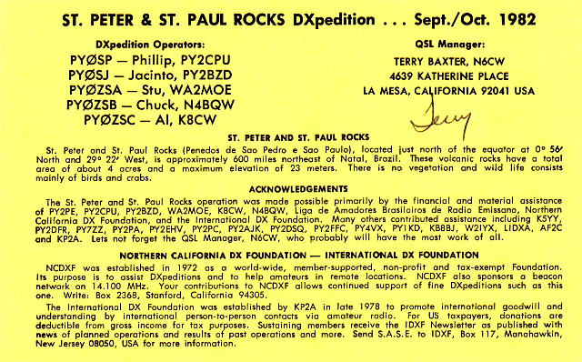

Flash ! DX


|
|
|
|
|
|
|
[Back Issues Nov.2012]
TIME:UTC(JST-09:00)
Report from JA1RJU(PM95sq)
30.Nov.2012(15:00b)
Report from JA1RJU(PM95sq)
29.Nov.2012(15:00b)
Report from JA1RJU(PM95sq)
28.Nov.2012(15:00b)
Report from JA1RJU(PM95sq)
23-27.Nov.2012(15:00b)
-------------------------------------------------------------------
◎23.Nov-27.Nov.
SEANET CONVENTION 2012 (Kuala Lumpur Weat Malaysia=9M2)
-------------------------------------------------------------------
Report from JA1RJU(PM95sq)
22.Nov.2012(15:00c)
VK5ZK 03:49 50.140 SSB
VK3OER 03:48 50.106 CW
VK5ZK 03:49 50.105 CW
VK2AXB 03:51 50.110 SSB
VK5BC 03:52 50.110 SSB
VK5CZ 03:56 50.106 CW @
VK5ZK 03:57 50.106 CW CQ
VK4ZJB 04:02 50.110 SSB
VK4AMG 04:07 50.106 CW CQ
VK4WTN 04:09 50.103 CW CQ
VK4RGG/b 04:10- 50.058 CW Beacon
VK5CZ 05:25 50.102 CW
VK5PO 05:30 50.108 CW
V84SMD 05:50 50.101 CW UP weak
V84SMD 05:38 50.101 CW @ UP2
-------------------------------------------------------------------
◎22.Nov-27.Nov.
SEANET CONVENTION 2012 (Kuala Lumpur Weat Malaysia=9M2)
-------------------------------------------------------------------
Report from JA1RJU(PM95sq)
21.Nov.2012(15:00b)
Report from JA1RJU(PM95sq)
20.Nov.2012(15:00b)
DU7/PA0HIP 08:45 50.110 CW CQ RST599
Report from JA1RJU(PM95sq)
19.Nov.2012(15:00b)
Report from JA1RJU(PM95sq)
18.Nov.2012(15:00c)
VK5PO 06:54 50.106 CW CQ DX
VK6RSX/b 07:45- 50.304 CW Beacon
Report from JA1RJU(PM95sq)
17.Nov.2012(15:00d)
V84SMD 04:30 50.130 SSB
V84SMD 04:50 50.130 SSB UP5-10
V84SMD 06:10 50.130 SSB CQ
V84SMD 07:15 50.130 SSB good sig!
DU1EV/B 07:25- 50.008 CW Beacon
V84SMD 07:30 50.130 SSB CQ/QRZ 5-10up
V84SMD 09:20 50.130 SSB still good RS59
Report from JA1RJU(PM95sq)
16.Nov.2012(15:00d)
V84SMD 03:59 50.130 SSB JA3/4 (weak in PM95)
V84SMD 04:14 50.130 SSB @ RS55 (into PM95 with QSB)
V84SMD 05:10 50.130 SSB still in but weak
DU1EV/B 07:55- 50.008 CW Beacon
DU7/PA0HIP 08:06 50.110 CW CQ RST599
Report from JA1RJU(PM95sq)
15.Nov.2012(15:00c)
VK4RTL/b 03:45- 50.282 CW Beacon RST579
DU1EV/B 08:00- 50.008 CW Beacon RST599
VK6RSX/b 09:40- 50.304 CW Beacon
Report from JA1RJU(PM95sq)
14.Nov.2012(15:00d)
LU5FF 01:15-02:05 50.100 CW CQ AS/JA1-2-3-0
VK4RGG/b 03:10- 50.058 CW Beacon RST599
VK4WTN 03:21 50.106 CW CQ RST599
VK4ZJB 03:24 50.120 CW CQ
VK4WM 03:29 50.104 CW CQ RST599
VK2WDD 03:35 50.110 SSB CQ
VK5BC 03:35 50.110/135 SSB CQ QSY
VK1DJA 03:36 50.125 SSB
VK3VG 03:39 50.125 SSB
VK2ZQ 03:42 50.130 SSB @ Mike
VK3OER 03:48 50.140 SSB
VK5ZK 03:49 50.140 SSB
VK3TCT 03:51 50.115 SSB
VK3DUT 03:52 50.110/145 SSB CQ QSY
VK3XQ 03:53 50.140 SSB CQ
VK3TCT 03:58 50.125 SSB @ John
FK8CP 04:01 50.128 SSB CQ
VK4ZJB 04:05 50.150 SSB
VK5BC 04:06 50.135 SSB CQ
VK4AFL 04:06 50.110 SSB CQ
FK8SIX/B 04:07- 50.080 CW Beacon RST599
VK2WDD 04:08 50.155 SSB
VK4AMG 04:09 50.107 CW
ZL1RS 04:13 50.103 CW
VK5ACY 04:16 50.156 SSB
VK4JAZ 04:17 50.156 SSB
VK5PO 04:21 50.110 CW CQ CQ
ZL1RS 04:24 50.103 CW CQ still good!
VK2ZT 04:46 50.130 SSB
|
◎ 午前中に短い南米(LU)の入感に続き午後からVK/ZLが強力にオープンした。特にVK'sはVK1-5まで広範囲に渡り同時に入感していた。
南米の入感で"PT0S"にも"ほんの少し"期待したいところだが現実は厳しい。 PT0Sからの13日付けの情報によると、6mでは南米と南ヨーロッパがQSO出来ている程度。 "6 meters: We had a number of good contacts with South America and Southern Europe, but no major openings so far. We continue monitoring 50.110 and call CQ regularly." Webで公表されている6mの周波数は50.101(CW)/50.130MHz(SSB)だが、実際に運用しているのは50.110MHz。 メンバーは狭い岩礁上で、"暑さとノイズと大波"の厳しい条件下での過酷な運用を強いられている。 |
Report from JA1RJU(PM95sq) 13.Nov.2012(15:00b)
|
◎ 期待されたチャタム島のZL7Aは残念ながら6mでのオープンが無いままに終わり、OPのJF1OCQ・三宅さんは既に帰国している。 強風の吹き荒れる悪天候の中での運用は、6mのアンテナのエレメントも曲がってしまうほどだったとか。 三宅さんは2年後に再度トライしたいとのこと。 サイクルのピークながら異常なほどコンデションの悪い「サイクル24」を改めて知らされた思いだが、 今年の暮れにかけて運用されるDX-Peditionの中で期待されているZL9HR(Campbell Is)の運用も、 6mバンドではこのコンデションではかなり厳しいものになりそう。 11月11日から運用が開始されているPT0S（St.Peter＆St.Paul Rocks=SP&SP)のDX-Peditionも、 「正常なサイクルのピーク」ならオープンの可能性も期待出来たのだが、この調子では、JAへのオープンは全く期待はできそうにない。 SP＆SPは、HF帯でもJAからQSOの困難なエンティティーの一つに挙げられているが、意外なことに既に6mではQSO済みのところ。 SP＆SPとの初オープンは、1982年10月2日の0128z(10:04-11:00JST)前後に南南東方向からJA6/4に入感、QSOに成功している。 このオープンは、事前に情報が得られず"予期しない"ものだったため、JA側ではワッチしている局はほとんど居ないといった、 心残りとなった"マジックバンド"のオープンだった。 今回のPT0Sは、6mの運用では30年ぶりとなるが、先日T30SIXを運用したPY2XB・Fredが参加して居り、 6mのアクティビィティーは期待されている。 既に初日から近隣のエンティティーと多くの6mでのQSOがリポートされている。 
 1982年にJAでもQSO出来た"珍局"PY0SJのQSL |
Report from JA1RJU(PM95sq)
12.Nov.2012(15:00b)
Report from JA1RJU(PM95sq)
11.Nov.2012(15:00c)
DU1EV/B 08:00- 50.008 CW Beacon RST599
VK6RSX/b 09:14- 50.304 CW Beacon weak
Report from JA1RJU(PM95sq)
10.Nov.2012(15:00b)
Report from JA1RJU(PM95sq)
09.Nov.2012(15:00c)
FK8CP 03:05 50.110 CW CQ
FK8CP 05:13 50.110 CW CQ
Report from JA1RJU(PM95sq)
08.Nov.2012(15:00c)
FK8CP 03:55 50.110 SSB CQ
FK8CP 05:09 50.110 CW CQ
FK8CP 06:20 50.110 CW CQ
Report from JA1RJU(PM95sq)
07.Nov.2012(15:00c)
VK5BC 04:15 50.110 SSB CQ
VK5BC 04:38 50.110/125 SSB
Report from JA1RJU(PM95sq)
06.Nov.2012(15:00b)
|
◎ チャタム島から運用しているZL7A(JF1OCQ・三宅さん）からの情報によると、島では相変わらず強風が吹き荒れ、
HFのアンテナの倒壊で40m以下の運用は出来ない状態で、現在は10mのグラスポール・アンテナ一本だけの運用となっている。 幸い6mのアンテナ(4EL)は防風林に囲まれたゲストハウスの前で、かろうじて倒壊を免れて、 6mのBeacon（30W+4el）は50.117MHzで連続発射出来ているとのこと。 |
Report from JA1RJU(PM95sq) 05.Nov.2012(15:00b) Report from JA1RJU(PM95sq) 04.Nov.2012(15:00b)
|
◎ 11月1日からチャタム島から運用しているZL7A（OP=JF1OCQ・三宅さん）は、現在HF帯でアクティブに運用中だが、
連日強風に見舞われており、アンテナの保持に苦労しているとの事。予定通り6mのBeacon（30W+4el）は50.117MHzで連続発射しているが、
残念ながら11月に入ってから6mのコンデションは落ちてしまい、10月下旬に良く入感していたZL本土も全く聞こえなくなってしまった。 ZL7Aの運用は11/9日までの予定。 |
Report from JA1RJU(PM95sq)
03.Nov.2012(15:00b)
Report from JA1RJU(PM95sq)
02.Nov.2012(15:00b)
Report from JA1RJU(PM95sq)
01.Nov.2012(15:00d)
VK4WTN 03:15 50.1055 CW
VK4RGG/b 03:19- 50.058 CW Beacon
VK4WTN 03:24 50.110 SSB
VK2YO 03:48 50.110/160 SSB
VK2WDD 03:49 50.110/120 SSB RS59
VK4EK 04:06 50.110 SSB RS59
VK4WTN 04:08 50.110/145 SSB
VK4EK 04:10 50.110 SSB
VK4JIN 04:13 50.110 SSB
VK4XE 04:14 50.110 SSB
VK6KXW 05:27 50.110 CW CQ
VK6JR/m 05:29 50.110 CW CQ
VK6RPH/b 05:30- 50.066 CW Beacon
FK8SIX/b 05:30- 50.080 CW(FSK) Beacon
VK6JJ 05:39 50.110 CW CQ DX
VK4ZJB 05:42 50.110 SSB CQ
VK6RO 05:44 50.110 CW CQ
VK6OX 05:49 50.110 SSB
| ◎ 11月1日から"ZL7A"(チャタム島)の運用を予定していたJF1OCQ・三宅さんは、予定通り今夜(日本との時差は約5時間)現地に到着、 早速6mにQRVを始めた。6mは50.117MHzでBeaconを発射しているが、0940z頃にZL1RSからMSによる入感のリポートが上がっている。 RIGはTS-480にACOM-1000(400W)のAMP、アンテナはRadixの4ELを使用。 |